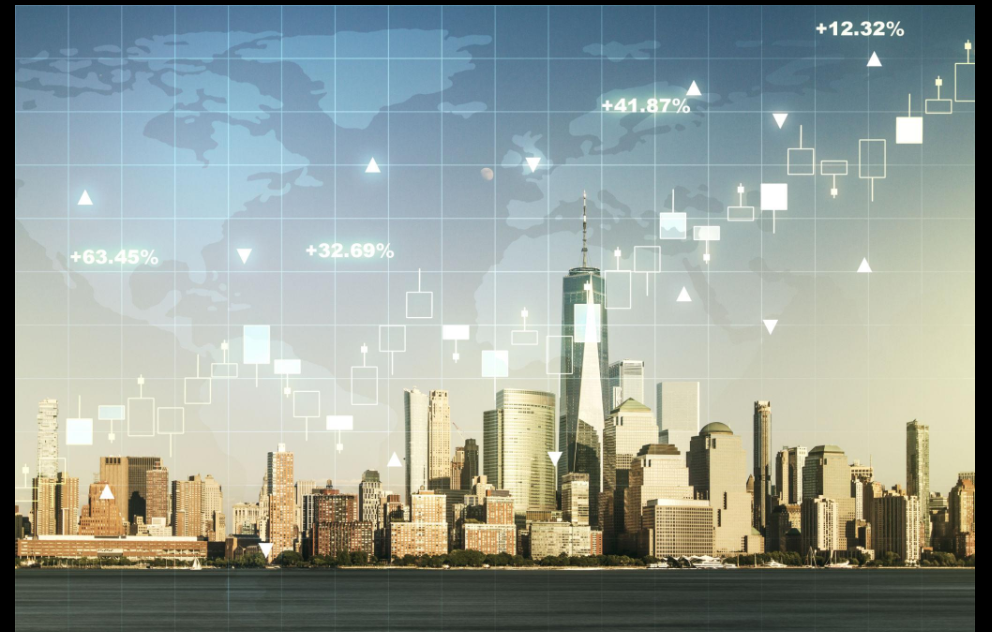

There was a time when going abroad felt like a major life event.
You saved for the trip. You planned months ahead. You carried paper maps, exchanged currency at the airport and probably took far too many photographs because every unfamiliar street felt worth remembering.
Investing abroad was even more distant.
Foreign markets belonged to large companies, wealthy investors and financial institutions. Buying something overseas required considerably more effort than opening an app today.
Now, the world appears much smaller.
A flight can take us across continents overnight. A person in India can invest in a foreign company from a phone. Someone in Europe can work remotely from Southeast Asia. A startup can have employees on five continents before it has a physical headquarters.
The World Has Become Smaller
Technology has changed our relationship with distance.
Twenty years ago, travelling internationally required considerably more preparation. Today, passports can be digitally linked to applications, accommodation can be booked within minutes and translation tools can help people communicate across languages.
The internet has also changed the way we choose destinations.
People no longer discover a city only through travel agencies or guidebooks. They discover it through TikTok, Instagram, YouTube, blogs and recommendations generated by algorithms.
A restaurant in Tokyo can become a global sensation overnight.
A small village in Italy can suddenly appear on millions of travel feeds.
A beach that very few people had heard of can become overcrowded within a single season.
Travel has become both more accessible and more visible.
The Post-Pandemic Traveller Is Different
The pandemic created an unusual break in the history of international travel.
For a period, the world stopped moving.
Airports emptied. Borders closed. Hotels struggled. Tourism-dependent economies suffered.
But when international travel returned, people did not simply return to their old habits.
Many travellers became more interested in experiences rather than simply collecting destinations.
Longer stays became attractive.
Remote work created the possibility of combining employment with travel.
People began thinking about wellness, food, culture, nature and local experiences rather than simply visiting famous landmarks.
UN Tourism reported approximately 1.4 billion international tourist arrivals in 2024, bringing international tourism back to roughly pre-pandemic levels.
But “Travel Is Back” Doesn't Mean Travel Is the Same
The current travel environment is more complicated than the headline numbers suggest.
Airfare, accommodation costs, visa rules, currency movements and geopolitical tensions can all change the attractiveness of a destination.
Political decisions can suddenly influence tourism.
A passport may determine how easily you can enter a country.
A currency may determine how long you can afford to stay.
A geopolitical crisis can change flight routes.
An economic downturn can change hotel prices.
Government policy can influence whether millions of people decide to visit.
And Then There Is Foreign Investment
The investment story is even more complicated.
At first glance, 2025 looked encouraging.
Global foreign direct investment recovered, but the recovery remained uneven and concentrated.
This is very different from the idea of a world where money simply flows wherever opportunities are greatest.
Today, investors are increasingly asking:
Where are governments encouraging investment?
Where are supply chains moving?
Where is technology being built?
The New Geography of Investment
For decades, globalisation was built around efficiency.
Companies searched for cheaper production. Factories moved. Supply chains stretched across continents.
Products could contain components from dozens of countries before reaching a consumer.
That model is now being reconsidered.
Trade tensions, tariffs, national-security concerns and supply-chain disruptions are encouraging companies to diversify where they manufacture and source goods.
It is changing its shape.
Instead of asking only:
“Where can we produce this most cheaply?”
companies are increasingly asking:
“Where can we produce this reliably, safely and strategically?”
The Rise of Strategic Investment
One of the clearest examples is technology.
Data centres, semiconductors, artificial intelligence infrastructure, renewable energy and critical minerals have become strategic assets.
Investment is therefore increasingly following national priorities.
- AI infrastructure
- Semiconductor manufacturing
- Clean-energy projects
- Advanced manufacturing
- Data centres
- Research and development
- Skilled workers

India and the New Global Opportunity
India is an especially interesting example.
The country is increasingly positioned not simply as a large consumer market but as a destination for manufacturing, technology and infrastructure investment.
But there is a fascinating contradiction.
India can be economically attractive while foreign portfolio investors remain cautious.
This demonstrates why “Is India a good investment?” is too simplistic a question.
The answer depends on what you are investing in, for how long, in which currency, and what risks you are willing to accept.
So, Is It a Good Time to Invest Abroad?
There isn't one universal answer.
But there is a compelling argument that this is an important time to understand international investment.
The world is undergoing a structural transition.
Capital is moving toward technology. Supply chains are being redesigned. Countries are competing for manufacturing. Energy systems are changing. AI is creating enormous infrastructure requirements.
What About Travelling the World?
Travel is a different kind of investment.
You don't necessarily receive a financial return. You receive experiences.
Travelling can expose someone to different languages, architecture, food, political systems, religions, businesses and ways of living.
It can change how someone thinks about their own country.
It can even influence career decisions.
Travel can therefore function as a form of education.
From Tourist to Global Citizen
Perhaps this is the biggest change of all.
Earlier generations often travelled abroad primarily as tourists.
Today, the boundaries are less clear.
Someone might study in Germany, work for an American company, invest in India, spend several months in Thailand, and maintain family connections across three countries.
The world has become more interconnected at an individual level.
But it has also created complexity.
Taxes become international. Currencies matter. Visas matter. Political stability matters. Healthcare systems matter.
What Has Changed Over the Years?
Then
International travel was expensive and relatively infrequent for many people.
Foreign investment required specialised financial infrastructure.
Information about countries was limited.
Global careers were relatively unusual.
International businesses were dominated by large corporations.
Now
Travel can be planned from a smartphone.
Financial markets are accessible to ordinary investors.
People can work remotely across borders.
Small businesses can sell internationally.
Students can study almost anywhere.
The New Risks We Are Looking At
The future of global mobility will not be determined by economics alone.
We have to watch several forces simultaneously.
Geopolitics. International tensions can affect investment, tourism, trade and currency markets.
Climate. Extreme weather can influence where people want to live and where companies want to build.
Artificial Intelligence. AI is changing where capital is going and which countries can compete for technological investment.
Currency. Exchange-rate movements can dramatically change the real cost of travelling or investing internationally.
Demographics. Aging populations and younger populations will influence labour markets and consumption.
Regulation. Visa rules, investment restrictions, tariffs and data regulations can reshape international opportunities surprisingly quickly.
The World Tour of the Future
The future traveller may not simply ask:
“Where should I go?”
They may ask:
“Where is changing?”
That is a completely different question.
Instead of visiting only the most famous capitals, people may become interested in emerging cities.
Instead of spending two days taking photographs, travellers may stay for several weeks.
Instead of separating travel from work, they may combine the two.
Travel could become less about collecting countries and more about understanding places.
And the Investor of the Future?
The same principle applies.
The investor of the future may not simply ask:
“Which country's stock market is going up?”
They may ask:
“Which structural change is creating the next decade of demand?”
AI? Energy? Semiconductors? Manufacturing? Healthcare? Water? Infrastructure? Digital services?
So, Should We Go Global?
The world is still incredibly interconnected.
International tourism has recovered strongly. Global investment has begun recovering after a difficult period. Technology has dramatically reduced the barriers to communication and financial participation.
But the era of assuming that globalisation automatically means fewer risks is over.
The world is becoming simultaneously more connected and more fragmented.
Money crosses borders faster. People travel farther. Businesses operate internationally.
But governments are also paying more attention to national security, supply chains, strategic industries and domestic resilience.
What Are We Really Looking At?
Perhaps the question isn't whether 2026 is the perfect year to invest abroad or travel around the world.
There may never be a perfect year.
There will always be political uncertainty. There will always be currency movements, economic cycles and unexpected events.
What has changed is that the world is giving individuals more ways to participate in globalisation than ever before.
We can travel.
We can study.
We can work.
We can invest.
We can build businesses.
We can meet people.
We can learn.
Access alone isn't enough.
The next generation of global citizens will need something more valuable than a passport or a brokerage account.
They will need context.
Because the future of globalisation isn't simply about going everywhere.
It is about understanding where the world is going.
And perhaps that is the most interesting journey of all.